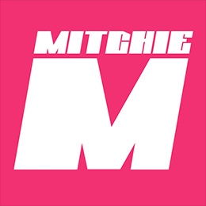

<div id="modal" class="comment">
  <div class="modal-page">
    <ul>
      <li>
        <p class="airtist">
          
          <span>Giga</span>
        </p>
        <div class="text">
          2011年に本格的に作曲をスタート。2012年、ボーカロイド”鏡音レン”をフィーチャーしたオリジナル曲「ギガンティックO.T.N（作曲／編曲／MIX）」を動画サイトに投稿し、計1,000万回以上再生されるヒットとなる。その後も「おこちゃま戦争（作曲／編曲／MIX）」、「ヒビカセ（作曲／編曲／MIX）」共に1,000万回以上再生するなどヒットを連発、特にアーティスト“れをる”との共作による楽曲は、YouTubeのみで1億再生を超え、日本国内はもちろん海外からも多大な評価を得る。<br><br>
          2016年、れをる、お菊と共にユニット「REOL」を結成、トイズファクトリーよりアルバム『Σ』をリリースし（共作曲含む作曲／全曲編曲）、シングルカット曲「ギミアブレスタッナウ」「宵々古今」のMVはYouTubeのみで其々800万回を超す再生回数を記録。海外からのラブコールも絶えず、イギリスのHYPER JAPANでライブ・パフォーマンスを披露するなど今後の活動が期待されていたなか、昨年Zepp Namba、豊洲PITで開催されたREOL LAST LIVE「終楽章」をもってユニットは発展的解散をとげ、各メンバー共々個々の活動に専念することになる。<br><br>
          FL STUDIOを駆使し作られる独特な世界観の楽曲には、リスナーのみならず国内外クリエイターからも信頼が厚く、今後は国内外のクリエイターへの楽曲提供、そして自身のオリジナル曲制作に力を入れていく。
        </div>
      </li>
      <li>
        <p class="airtist">
          
          <span>Mitchie M</span>
        </p>
        <div class="text">
          2011年7月、自身2作目となる「FREELY TOMORROW」をニコニコ動画に投稿。すると投稿から僅か20日6時間4分でVOCALOID伝説入り（100万回再生／歴代最速記録）するという偉業を達成。<br><br>
          「歌詞がくっきり聴こえる」という、それまでのVOCALOID曲にはなかった “神調教”スキルとハイクオリティな楽曲が、J-POPリスナーから国内外VOCALOIDファンまで幅広いユーザー層を虜にし、2013年11月にリリースされたファーストアルバム『グレイテスト・アイドル』にはジャケットイラストに貞本義行氏を迎え、オリコン週間チャートウィークリー6位を記録。<br>
          2014年には『SNOW MIKU』公式ソング「好き！雪！本気マジック」を手がけ、2015年には安室奈美恵「B Who I Want 2 B feat. HATSUNE <br>MIKU」の初音ミクの調声と作詞（一部）を担当。そして2016年には初音ミクが出演して話題となった『Lux』のTVCMの楽曲も手がけ、同楽曲は『初音ミクシンフォニー』のテーマソングとしても起用されている。<br><br>
          VOCALOIDリスナーでない人でも自然に聴ける歌声の楽曲を制作しており、2019年満を持して、イラストレーターに美樹本晴彦氏を迎えた約6年ぶりとなるセカンド・アルバム『ヴァーチャル・ポップスター』をリリースする。
        </div>
      </li>
    </ul>
  </div>
</div>